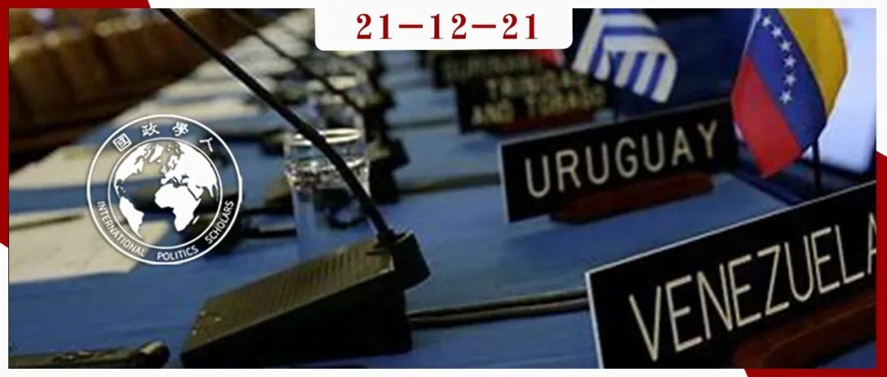

收录于合集 #《国际关系前沿》2021年第12期 22个

作品简介
作者： Tom Long, 英国华威大学政治与国际研究系助理教授，主要研究领域为美洲地区（区域）国际关系、非对称权力下的国际关系。
编译： 赖永祯（国政学人编译员，美国芝加哥大学社会科学硕士生）
来源： Long, T., (2020),“Historical Antecedents and Post-World War II Regionalism in the Americas”, World Politics , 72:2, 214-253，https://doi.org/10.1017/S0043887119000194. doi:10.1017/S0020818316000199
归档： 《国际关系前沿》2021年第12期，总第39期。

文章导读
01
导言
二战结束后，美国在世界各地建立了不同制度形式的区域性安全机制。比较典型的机制差异在于，美国在西欧建立了多边安全机制（例如北约组织），而在东亚地区则建立了以各自订立双边条约形式的安全同盟。事实上在二战后，西半球地区也建立了美国主导的以《美洲国家间互助条约》（Treaty of Reciprocal Assistance，1947年签订）和美洲国家组织（1948年成立）为框架的多边安全机制。然而在多数关于战后地区安全秩序的制度形成的议题中，美洲地区多边安全体系这一个案常常遭到忽视。大多数关于区域安全体系形成的论述多强调外部威胁、责任分担和共享区域身份等因素作为解释区域安全制度产生的必要条件，但是这些条件都难以解释美洲国家间安全机制的形成。
尽管战后泛美安全体系的产生由美国在区域内主导的不对称权力关系塑造，但是作者认为，这一机制也成为主权平等与不干涉主义等国际规范的孵化器。当时许多拉美国家的领导人认为，多边安全机制能够通过制度和法律框架限制美国的单边主义行为。美洲区域组织的产生，也远非仅仅是美国政策界关于战后维持单边主义或多边主义的内部争论的产物，亦非美国强加于拉美国家的制度安排。另一方面，泛美安全体系产生于拉美国家政策界试图扩展与重塑战前美洲区域制度的需求，以适应战后的全球秩序。也就是说，这一区域多边安全秩序是美国扩展其区域影响力与拉美国家满足其利益需求的“大交易”结果。
作者进而指出，泛美安全体系的形成难以用主流的多边安全制度理论加以解释。美洲安全体系脱胎于美洲区域主义发展过程中存在的共有“历史先例”（historical antecedents）的塑造下，并由美洲国家领导人顺着这一路径推动的产物。因此，作者就战后国际组织的形成提供了一个解释：历史先例如何在特定关键节点的环境下塑造领导人的政策选择，并促进他们在既有区域制度上进行叠加（layering）和改造（conversion）的过程。就美洲国家组织案例的研究也展示了历史遗产如何在区域制度发展中发挥作用的过程，并且这种影响是如何区别于共同身份的作用的。
02
历史轨迹与区域秩序
国际关系领域就关于区域安全秩序的理论解释大致分为如下两种：一是强调区域安全的“供给端”，即霸权国家基于体系层面或执政联盟的国际主义利益而扮演区域安全的提供者；二是强调“需求端”，即区域内共同的内外威胁和消极的安全外部促使区域内国家建立多边安全秩序。在区域安全机制的比较研究中，现有研究则以北约与东亚安全秩序的比较为典型。但是作者认为，既有解释区域安全制度中“有无北约”的论述难以说明美洲地区集体安全体系的存在。对此作者认为， 区域内部的历史先期发展起到至关重要的作用 。虽然这种“历史先例”并不是区域安全制度形成的充分条件，但却是促使区域制度得以在关键节点下形成的助益背景。尽管诸如历史遗产等因素确实如许多研究所说那样产生重要影响，但是大多数有关历史背景的解释往往混同于历史记忆或区域身份认同等长期背景。与大多数偏重观念影响的论述不同的是，作者指出，历史先例对区域制度的影响在特定关键节点会产生一定的因果关系，而这一过程并不与身份认同塑造制度的过程相重合。
作者的这一解释也拓展了历史制度主义（historical institutionalism）对于关键节点作用的论述。一般而言，历史制度主义认为制度往往在长期的历史阶段中保持稳定的运行，仅仅在特定的历史阶段中存在重大的制度变迁。也就是说，制度的发展是一个长期静止（即通过“路径依赖”的机制）与短期变化（往往是外部影响导致的“关键节点”）的混合过程；而“关键节点”下的制度变迁则是源自于结构约束的松动，导致能动性的作用得以上升。作者则补充了关键节点期间能动性推进制度变迁的因果机制，即“叠加”和“转化”两个过程。所谓“叠加”，即在既有制度上增加新要素以逐渐改变其制度或地位的过程；“转化”即转变既有制度的功能。而既有制度在这两个机制中扮演背景性的角色。
但是，历史先例与关键节点的存在并不一定就能产生多边制度。历史先例存在“容许性”（permissive cause）与“助益性”（productive cause）的因素，所谓“容许性”因素产生了关键节点下偶然时机的能动背景，而“助益性”因素则扮演产生直接因果机制的原因。关于战后东亚、北大西洋与美洲地区区域安全机制的形成而言，它们都具有相似的容许性因素，但是助益性因素则存在差异。导致北约形成的责任分担等三个因素并不一定是导致其它地区安全机制形成的原因。作者认为，在美洲固有的区域主义传统的历史先例下，次级国家与主导国家的偏好相容推动了美洲国家安全机制的形成。而既有制度的历史先例则塑造了行为体在关键节点下的主张和预期，因而在既有制度上“叠加”和“转化”也就成为更加安全与有效的制度安排。作者在案例分析中，也对理性选择和区域身份认同等竞争性解释做了论证。
03
泛美安全体系的重塑
泛美安全体系源自于20世纪初美国在拉美地区推行国际法等规范的实践。美国对拉美地区的军事干预也促成拉美国家寻求建立特定的国际机制约束美国的干涉行为，并承认“主权平等”。1923年美洲国家决定在其执行理事会上派遣常驻代表，拉美国家也在20世纪20至30年代获得一个同美国协商、施压、甚至反对美国外交政策的多边平台。这一多边平台也为二战后美洲国家寻求安全合作塑造了一个制度性先例。
二战结束后，在美国寻求建立以联合国为主的全球性安全制度时，拉美国家则主张建立受国际法约束的战后区域秩序，以免因美国建立全球秩序而遭受边缘化。1944年，墨西哥政府则强调，未来的国际秩序应当延续美洲国家间的“不干涉主义”原则，这一理念挪用自罗斯福对拉美“睦邻外交”( Good Neighbour policies )的实践；另一方面在关于联合国的制度安排上，巴西等拉美主要国家基于早前在国联中未能发挥重要角色的经验，故而更偏向于建立多边性区域安全体系。为适应联合国安理会框架，拉美国家则提出，关于安理会决议有关美洲地区事宜，应当由美洲国家自行执行。
在这一过程中，拉美国家将原有的既定区域制度安排视为成功经验，并试图将战后的多边主义与不干涉主义等规范“叠加”至既有的制度框架中。具体而言，在1945年的墨西哥城会议上，巴西提出在既有的执行委员会和外交会议上设立永久性的美洲国家外长理事会，并为随后的决议所采纳。而从美国的角度，在随后的旧金山联合国制宪会议上，尽管美国试图避免其未来行动受制度约束，但从后来与拉美国家的谈判来看，美国提出“集体自卫权”的概念回应拉美的诉求，体现了其二战后对门罗主义的延续。此外，作者从美国的外交备忘录中发现，在这一国际秩序转变的“关键节点”中，拉美国家并未与美国共享区域身份，美国仅仅将对拉美国家的区域安全承诺视为一种自上而下的奖赏。另一方面，美国军方虽主张建立有限的责任分担机制，但遭到美国国务院的反对，后者认为拉美的军事行动是无用且危险的。美国政府内部的争议则反映了当时拉美国家区域安全制度的安排并非是受外部威胁的压力所致。
从此后的制度设计来看，除了拉美国家的推动外，1947年后美苏关系趋向恶化以及美国对于本地区内反美运动兴起的担忧，使美国最终接受了美洲地区的集体安全体系。1948年波哥大会议(Bogota conference)最终确立了美洲国家组织宪章，其背后则有墨西哥等国家对于美国就本地区承诺可信度的担忧。而这一组织本身则是对战前临时性的泛美合作的制度升级。因此，美洲国家组织的产生可以说是二战后新国际秩序产生过程这一关键节点下对既有制度进行叠加和改造的产物。
译者评述
本文作者运用历史制度主义框架论述区域国际安全体系的成因。在冷战时期的安全体系中，关于为何亚太地区“不存在北约”的问题众说纷纭，然而作者认为，即便是能够解释北约形成的论述，也并不适用于解释其它地区多边安全体系的形成。作者援引美洲国家组织的个案拓展了关于二战后区域安全制度为何存在差异的解释，认为二战后的区域安全制度的形成离不开本地区历史发展的结构背景。这一结构背景也同时塑造了当时的决策者关于“什么制度安排是合适的选择”的观念，而非一定选择“最佳”的制度安排。
但另一方面，历史制度主义对于制度形成更多提供了一种解释路径（approach），即“制度形成都离不开历史遗产”这个大背景，而非具体的因果机制。就本文关于美洲国家组织的形成而言，“叠加”与“转化”作为特定的制度形成机制解释了美洲国家组织如何从原有的泛美会议中发展形成。比较欧洲、拉美与东亚地区的区域安全制度，虽然我们提出一个完全意义上更具有覆盖性的解释仍具有一定的挑战性，但是就现实的实践而言，不同地区制度的形成何尝不是各种时空环境下多种机制作用的产物，并且在解释不同的个案也不一定是互斥关系。寻求更加具有竞争力的解释，仍然需要回到不同的个案环境中、通过更多的解读与分析来提炼。
词汇整理
美洲国家组织
OAS（Organization of American States）
历史制度主义 Historical institutionalism
多边安全制度
Multilateral security institutions
先例 Antecedent
关键节点 Critical juncture
审校 | 董诗 张彦赪
排版 | 牛子悦 臧泽华
文章观点不代表本平台观点，本平台评译分享的文章均出于专业学习之用, 不以任何盈利为目的，内容主要呈现对原文的介绍，原文内容请通过各高校购买的数据库自行下载。

国政学人
支持学术公益与知识传播
微信扫一扫赞赏作者 __赞赏
已喜欢，对作者说句悄悄话
取消 __
发送给作者
发送
最多40字，当前共字
上一页 1/3 下一页
长按二维码向我转账
支持学术公益与知识传播
受苹果公司新规定影响，微信 iOS 版的赞赏功能被关闭，可通过二维码转账支持公众号。